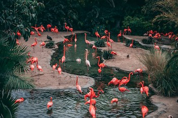
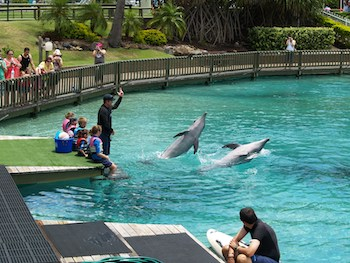
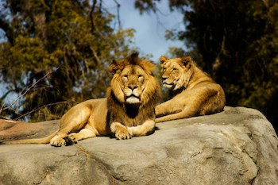

BRINGS PICTURE-BOOK CHARACTERS TO LIFE

Photo by Matthew Cabret on Unsplash
Us oldies forget what it is like to see something for the first time but for littlies, every experience is a new experience. Taking your kids to the zoo lets you watch the child-like wonder dancing in their eyes as they see their favourite picture-book characters come alive for the first time. Living, breathing animals are amazing, so let yourself be swept away by untamed nature.
SEE EXOTIC ANIMALS ON YOUR HOME TURF

Photo by Chris Richmond on Unsplash
Before visiting the zoo, exotic animals are just cartoon pictures to kids. Who knew that giraffes were so big they couldn’t fit on a television screen? Zoos present biodiversity and bring the world to a child’s fingertips. If it’s too expensive to take a trip to India to see the elephants, or to trek across the Savanna to glimpse the yawn of a lion, then really, zoo admission is a small price to pay.
SAY GOODBYE TO YOUR SCREENS FOR A DAY

Photo by Jeremy Avery on Unsplash
Speaking of screens, going to the zoo is something we can all remember as children. Instead of seeing something through a phone, a zoo is first-hand. Going to the zoo is like organic parenting, enabling kids to undergo experiences without it being filtered. Back to basics: running around, feeding the ducks, being gobsmacked by nature; this explorative learning is what being a kid is all about.